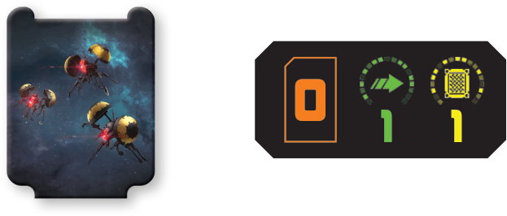
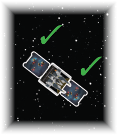
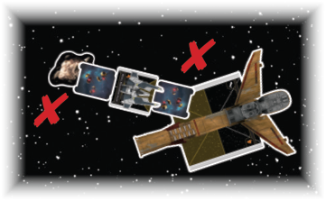

Buzz Droid Swarm

Types: Device, Remote
System, Activation, and End Phase: No effect.
Engagement Phase: When you engage, each enemy ship at range 0 of the buzz droid swarm suffers 1 damage.

Other Rules: After an enemy ship overlaps or moves through a buzz droid swarm, the swarm’s controlling player relocates it by aligning the tab to that ship’s front or rear guides (this ship is at range 0 of the swarm).
The swarm cannot be aligned to a set of the ship’s guides if doing so would cause it to overlap an object. If the swarm cannot be placed at a chosen set of guides, its controlling player must align it to the other set of the ship’s guides.

If it cannot be aligned to the other set, the swarm and the enemy ship that overlapped or moved through it each suffer 1 damage.